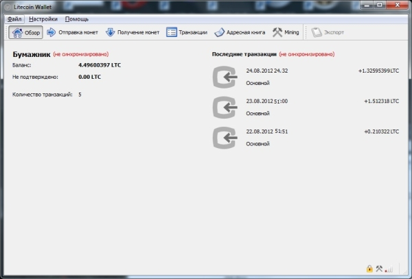
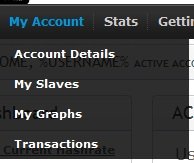
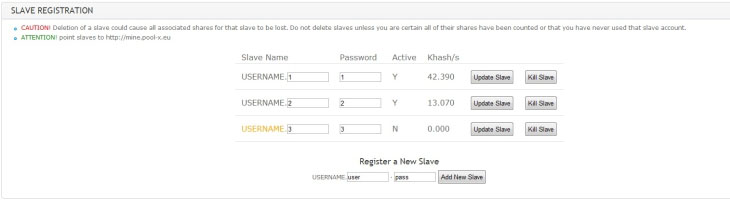
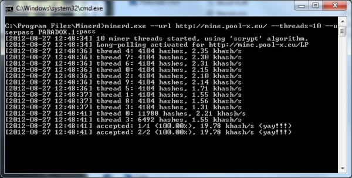
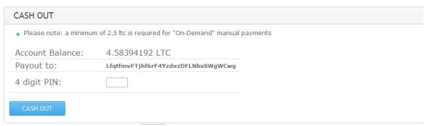
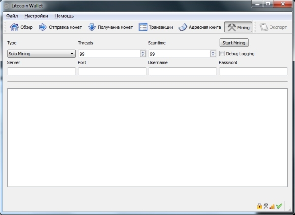
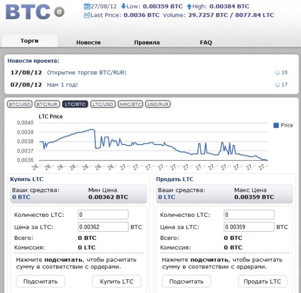

В данной статье мы рассмотрим тему майнинга Litecoin.
Для начала нам нужен Litecoin кошелёк в который мы будем переводить намайненые монеты. Идём по ссылке на официальную страницу разработки проекта и скачиваем клиент в удобном для нас виде.
Пока идёт синхронизация - давайте ознакомимся с самим майнингом.

Посмотреть ориентировочную скорость своего процессора или видеокарты при майнинге Litecoin можно в этой таблице.
В данном случае нам нужна программа Minerd, для этого переходим по ссылке и скачиваем еe.
Список пулов, поддерживающих лайткоин, можно найти в этой таблице, мы рассмотрим майнинг на примере пула Pool-x.eu.
Регистрируемся:
Заметьте, здесь нужно указать пин-код который будет нужен для изменения настроек и вывода монет на кошелёк. После создаём имя и пароль для майнера, для этого переходим в раздел My Slaves

Также здесь можно посмотреть краткую статистику по воркерам:

После регистрации нам нужно запустить майнер. Для этого в папке с майнером создаём bat-файл следующего содержания:
minerd.exe --url http://mine.pool-x.eu/ --threads=N --userpass Username.1:pass
Количество потоков выберите в соответствии с мощностью вашего процессора. Запускаем, и появляется консольное окно Minerd со статистикой:

Когда намайнили достаточно, можно вывести монеты на кошелёк:

Также майнить можно и с помощью самого кошелька:

На бирже BTC-e.com можно переводить LTC в BTC, а их уже и в другие валюты.
